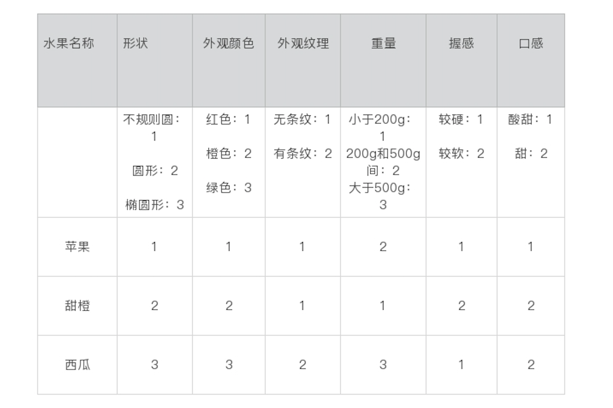
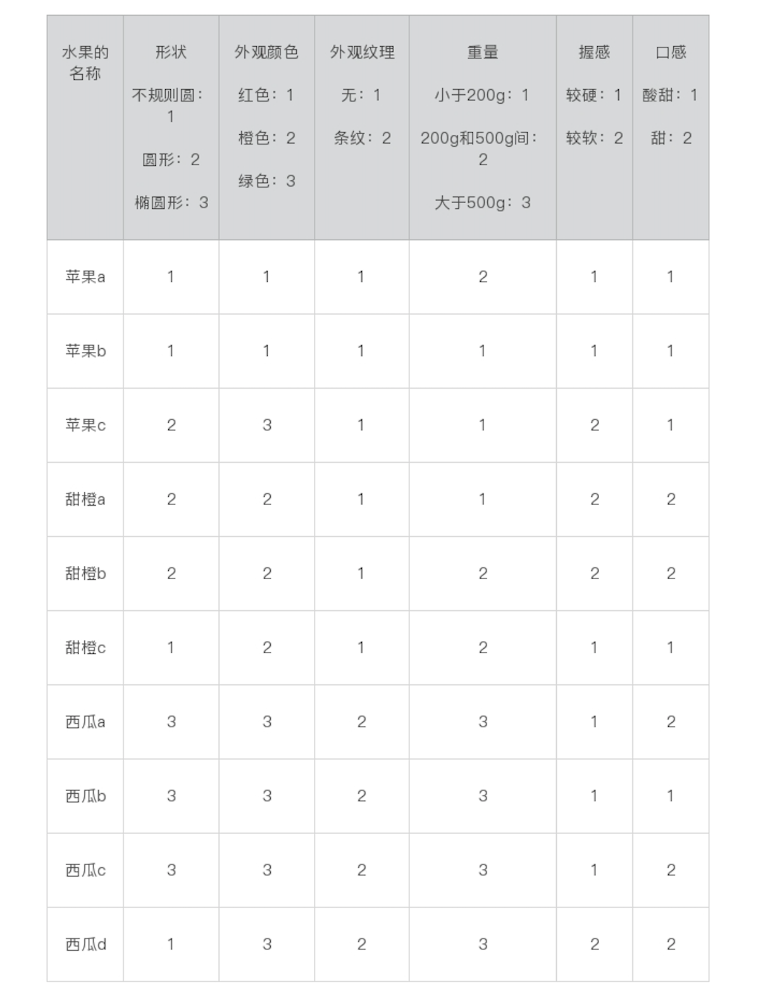
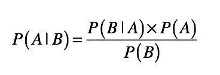
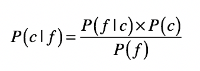
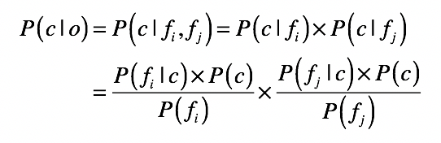
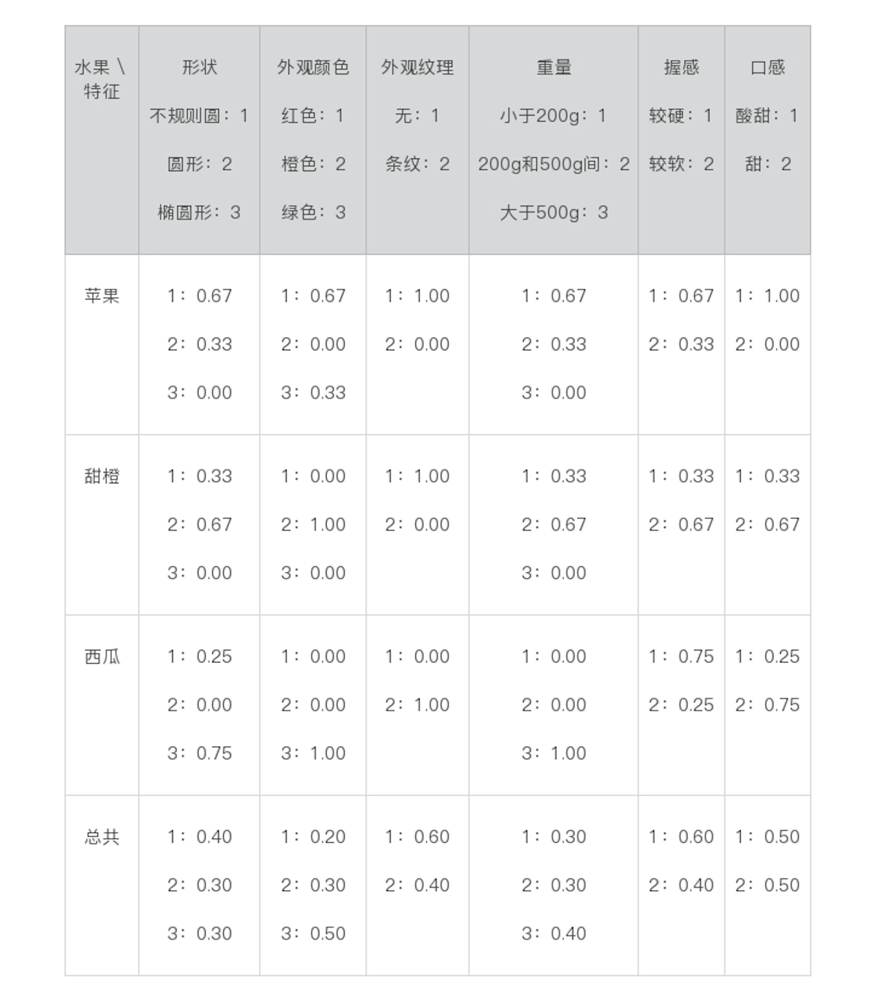
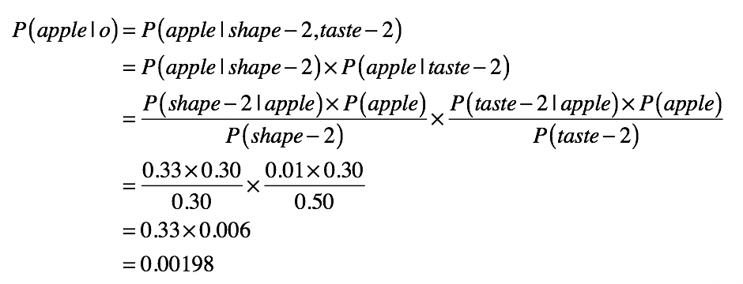
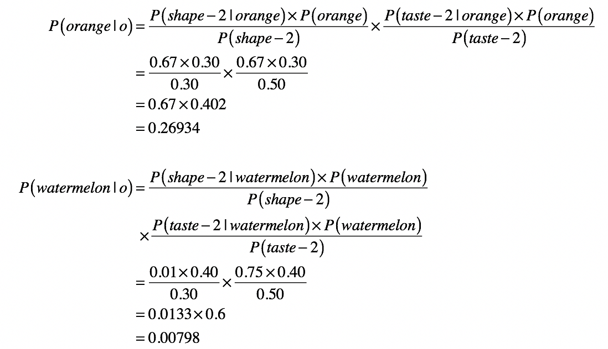

- 01 二进制：不了解计算机的源头，你学什么编程.md
- 02 余数：原来取余操作本身就是个哈希函数.md
- 03 迭代法：不用编程语言的自带函数，你会如何计算平方根？.md
- 04 数学归纳法：如何用数学归纳提升代码的运行效率？.md
- 05 递归（上）：泛化数学归纳，如何将复杂问题简单化？.md
- 06 递归（下）：分而治之，从归并排序到MapReduce.md
- 07 排列：如何让计算机学会“田忌赛马”？.md
- 08 组合：如何让计算机安排世界杯的赛程？.md
- 09 动态规划（上）：如何实现基于编辑距离的查询推荐？.md
- 10 动态规划（下）：如何求得状态转移方程并进行编程实现？.md
- 11 树的深度优先搜索（上）：如何才能高效率地查字典？.md
- 12 树的深度优先搜索（下）：如何才能高效率地查字典？.md
- 13 树的广度优先搜索（上）：人际关系的六度理论是真的吗？.md
- 14 树的广度优先搜索（下）：为什么双向广度优先搜索的效率更高？.md
- 15 从树到图：如何让计算机学会看地图？.md
- 16 时间和空间复杂度（上）：优化性能是否只是“纸上谈兵”？.md
- 17 时间和空间复杂度（下）：如何使用六个法则进行复杂度分析？.md
- 18 总结课：数据结构、编程语句和基础算法体现了哪些数学思想？.md
- 19 概率和统计：编程为什么需要概率和统计？.md
- 20 概率基础（上）：一篇文章帮你理解随机变量、概率分布和期望值.md
- 21 概率基础（下）：联合概率、条件概率和贝叶斯法则，这些概率公式究竟能做什么？.md
- 22 朴素贝叶斯：如何让计算机学会自动分类？.md
- 23 文本分类：如何区分特定类型的新闻？.md
- 24 语言模型：如何使用链式法则和马尔科夫假设简化概率模型？.md
- 25 马尔科夫模型：从PageRank到语音识别，背后是什么模型在支撑？.md
- 26 信息熵：如何通过几个问题，测出你对应的武侠人物？.md
- 27 决策树：信息增益、增益比率和基尼指数的运用.md
- 28 熵、信息增益和卡方：如何寻找关键特征？.md
- 29 归一化和标准化：各种特征如何综合才是最合理的？.md
- 30 统计意义（上）：如何通过显著性检验，判断你的A_B测试结果是不是巧合？.md
- 31 统计意义（下）：如何通过显著性检验，判断你的A_B测试结果是不是巧合？.md
- 32 概率统计篇答疑和总结：为什么会有欠拟合和过拟合？.md
- 33 线性代数：线性代数到底都讲了些什么？.md
- 34 向量空间模型：如何让计算机理解现实事物之间的关系？.md
- 35 文本检索：如何让计算机处理自然语言？.md
- 36 文本聚类：如何过滤冗余的新闻？.md
- 37 矩阵（上）：如何使用矩阵操作进行PageRank计算？.md
- 38 矩阵（下）：如何使用矩阵操作进行协同过滤推荐？.md
- 39 线性回归（上）：如何使用高斯消元求解线性方程组？.md
- 40 线性回归（中）：如何使用最小二乘法进行直线拟合？.md
- 41 线性回归（下）：如何使用最小二乘法进行效果验证？.md
- 42 PCA主成分分析（上）：如何利用协方差矩阵来降维？.md
- 43 PCA主成分分析（下）：为什么要计算协方差矩阵的特征值和特征向量？.md
- 44 奇异值分解：如何挖掘潜在的语义关系？.md
- 45 线性代数篇答疑和总结：矩阵乘法的几何意义是什么？.md
- 46 缓存系统：如何通过哈希表和队列实现高效访问？.md
- 47 搜索引擎（上）：如何通过倒排索引和向量空间模型，打造一个简单的搜索引擎？.md
- 48 搜索引擎（下）：如何通过查询的分类，让电商平台的搜索结果更相关？.md
- 49 推荐系统（上）：如何实现基于相似度的协同过滤？.md
- 50 推荐系统（下）：如何通过SVD分析用户和物品的矩阵？.md
- 51 综合应用篇答疑和总结：如何进行个性化用户画像的设计？.md
- 导读：程序员应该怎么学数学？.md
- 开篇词 作为程序员，为什么你应该学好数学？.md
- 数学专栏课外加餐（一） 我们为什么需要反码和补码？.md
- 数学专栏课外加餐（三）：程序员需要读哪些数学书？.md
- 数学专栏课外加餐（二） 位操作的三个应用实例.md
- 结束语 从数学到编程，本身就是一个很长的链条.md
22 朴素贝叶斯：如何让计算机学会自动分类？
你好，我是黄申。今天我们来聊聊朴素贝叶斯。
在开始正式的内容之前，我想问你一个问题，你是如何区分苹果、甜橙和西瓜的？你可能要说了，这个问题还用得着讲吗？是不是你们博士都喜欢将简单的问题复杂化？还真不是，如果你将计算机想象成一个两三岁的孩子，你会怎么教一个孩子区分这些水果呢？
比如我曾经就和一个小朋友有过这样一段对话：
小朋友：黄叔叔，你和我讲讲，什么样的水果才是苹果呀？
我：圆形的、绿色的水果。
小朋友：那西瓜也是圆形的、绿色的呀？
我：嗯……苹果也有可能是黄色或红色的，但西瓜不是。
小朋友：那甜橙也是圆形的、黄色的呀？
我：好吧，你看到的大部分情况下的甜橙都是黄色的，而苹果只有很少情况（少数品种）是黄色的。而且你还可以尝尝，它们的味道也是不同的。
哈哈，你是不是觉得想要描述清楚，并没有想象中的那么容易？但是，在这个对话中，有两点我觉得你需要关注一下：
我使用了“可能”“大部分情况”“很少情况”等等这种词语，这些词包含了概率的概念；
我使用了多个条件来判断一个水果属于哪个类别。
基于此，我接下来就要聊聊，我们是如何通过数学的思想和方法，系统性地解决这个问题的。其中，朴素贝叶斯（Naive Bayesian）就提供了一个切实可行的方案。不过，在深入了解它之前，我们还需要做点准备工作。
如何将原始信息转化为计算机能看懂的数据？
事实上，计算机并不像两三岁的小孩那样，可以看到水果的颜色、形状和纹理，或者能尝到水果的味道。我们需要将水果的特征转化为计算机所能理解的数据。最常用的方式就是提取现实世界中的对象之属性，并将这些转化为数字。
以水果为例，你会提取它们的哪些属性呢？我会考虑这些，比如：形状、外皮颜色、斑马纹理、重量、握感、口感。我手边刚好有一个苹果、一个甜橙和一个西瓜，我把它们的属性分别统计了一下，你可以看看。
然后，我们需要这些属性转化为计算机能够理解的东西——数字，也就是说，我给每种属性都定义了具体的数值，用来代表它们的具体属性。

比较细心的话，你可能已经发现了，我偷偷地把重量由连续值转化成了离散值，这是因为朴素贝叶斯处理的都是离散值。
好了，仅仅3个水果还不足以构成朴素贝叶斯分类所需的训练样本。为了保证训练的质量，我们可以继续扩展到10个水果。

朴素贝叶斯的核心思想
我们现在已经拿到了这10个水果的数据，那如果现在我手上有一个新的水果，它也有一定的形状、颜色、口感等等，你怎么判断它是哪种水果呢？
之前的文章我们讲过先验概率、后验概率、条件概率和贝叶斯法则，它们是朴素贝叶斯分类的核心组成部分。通过贝叶斯法则，我们可以根据先验概率和条件概率，推导出后验概率。首先让我们快速回想一下贝叶斯公式。

上一节，我已经详细解释了这个公式的推导和每一部分的含义，这里再强调一下贝叶斯定理的核心思想：用先验概率和条件概率估计后验概率。
那具体到这里的分类问题，我们该如何运用这个公式呢？为了便于理解，我们可以将上述公式改写成这样：

其中，c表示一个分类（class），f表示属性对应的数据字段（field）。如此一来，等号左边的P(c|f)就是待分类样本中，出现属性值f时，样本属于类别c的概率。而等号右边的P(f|c)是根据训练数据统计，得到分类c中出现属性f的概率。P©是分类c在训练数据中出现的概率，P(f)是属性f在训练样本中出现的概率。
看到这里，你可能要问了，这里的贝叶斯公式只描述了单个属性值属于某个分类的概率，可是我们要分析的水果每个都有很多属性啊，这该怎么办呢？
别急，朴素贝叶斯在这里就要发挥作用了。这是基于一个简单假设建立的一种贝叶斯方法，并假定数据对象的不同属性对其归类影响时是相互独立的。此时若数据对象o中同时出现属性fi与fj，则对象o属于类别c的概率就是这样：

现在，我们应该已经可以用10个水果的数据，来建立朴素贝叶斯模型了。
其中，苹果的分类中共包含3个数据实例，对于形状而言，出现2次不规则圆、1次圆形和0次椭圆形，因此各自的统计概率为0.67、0.33和0.00。我们将这些值称为，给定一个水果分类时，出现某个属性值的条件概率。以此类推，所有的统计结果就是下面这个表格中这样：

对于上表中出现的0.00概率，在做贝叶斯公式中的乘积计算时，会出现结果为0的情况，因此我们通常取一个比这个数据集里最小统计概率还要小的极小值，来代替“零概率”。比如，我们这里取0.01。在填充训练数据中从来没有出现过的属性值的时候，我们就会使用这种技巧，我们给这种技巧起个名字就叫作平滑（Smoothing）。
有了这些条件概率，以及各类水果和各个属性出现的先验概率，我们已经建立起了朴素贝叶斯模型。现在，我们就可以用它进行朴素贝叶斯分类了。
假设我们有一个新的水果，它的形状是圆形，口感是甜的，那么根据朴素贝叶斯，它属于苹果、甜橙和西瓜的概率分别是多少呢？我们先来计算一下，它属于苹果的概率有多大。

其中，apple表示分类为苹果，shape-2表示形状属性的值为2（也就是圆形），taste-2表示口感属性的值为2。以此类推，我们还可计算该水果属于甜橙和西瓜的概率。

比较这三个数值，0.00198<0.00798<0.26934，所以计算机可以得出的结论，该水果属于甜橙的可能性是最大的，或者说，这个水果最有可能是甜橙。
你可能已经注意到了，这几个公式里的概率乘积通常都非常小，在物品的属性非常多的时候，这个乘积可能就小到计算机无法处理的地步。因此，在实际运用中，我们还会采用一些数学手法进行转换（比如取log将小数转换为绝对值大于1的负数），原理都是一样的。
内容比较多，我稍微总结一下。朴素贝叶斯分类主要包括这几个步骤：
准备数据：针对水果分类这个案例，我们搜集了若干水果的实例，并从水果的常见属性入手，将其转化为计算机所能理解的数据。这种数据也被称为训练样本。
建立模型：通过手头上水果的实例，我们让计算机统计每种水果、属性出现的先验概率，以及在某个水果分类下某种属性出现的条件概率。这个过程也被称为基于样本的训练。
分类新数据：对于一个新水果的属性数据，计算机根据已经建立的模型进行推导计算，得到该水果属于每个分类的概率，实现了分类的目的。这个过程也被称为预测。
朴素贝叶斯分类VS其他分类算法
用朴素贝叶斯进行分类的内容差不多就是这样，你可能要问了，朴素贝叶斯是唯一的分类算法吗？现实中需要分类的场景那么多，朴素贝叶斯都适用吗？确实，我们有很多种分类算法，它们也都有各自的优劣。我这里就把朴素贝叶斯和常用的几种分类算法做个总结和比较。
和KNN最近邻相比，朴素贝叶斯需要更多的时间进行模型的训练，但是它在对新的数据进行分类预测的时候，通常效果更好、用时更短。
和决策树相比，朴素贝叶斯并不能提供一套易于人类理解的规则，但是它可以提供决策树通常无法支持的模糊分类（一个对象可以属于多个分类）。
和SVM支持向量机相比，朴素贝叶斯无法直接支持连续值的输入。所以，在前面的案例中，我将连续值转化成了离散值，便于朴素贝叶斯进行处理。
为了便于你理解记忆，我这里也做一下总结。
如果一个分类的应用场景中，待分类对象的属性值大部分都是离散的（或者很容易转化为离散的）、需要支持模糊分类，并且需要快速可靠的实时分类，那么这种场景通常就非常适合使用朴素贝叶斯方法。
总结
今天我从一个看似非常简单的判断水果的例子出发，介绍了如何通过物体的属性及其数值，让计算机理解现实世界中的事物，并通过朴素贝叶斯方法来对其进行分类。
在朴素贝叶斯方法的推导过程中，我给你讲了如何使用贝叶斯法则，将后验概率的估计转换为先验概率和条件概率。朴素贝叶斯训练过程包括基于样本数据的先验概率和条件概率统计，分类过程就包括了使用贝叶斯法则，结合新样本的属性数据以及训练好的模型数据，进行最终的预测。
最后，我将朴素贝叶斯和其他常见分类算法，比如KNN近邻、决策树、SVM向量机，做了对比。朴素贝叶斯适用离散属性值中，训练过程耗时长但是分类预测速度快，支持模糊分类。这一节的内容比较偏理论，下一节，我会着重来讲朴素贝叶斯的应用场景，告诉你哪些场合下更适合使用朴素贝叶斯法。
思考题
除了文本分类，你还知道什么地方可以使用朴素贝叶斯方法来处理分类问题？
欢迎留言和我分享，也欢迎你在留言区写下今天的学习笔记。你可以点击“请朋友读”，把今天的内容分享给你的好友，和他一起精进。
© 2019 - 2023 Liangliang Lee. Powered by gin and hexo-theme-book.